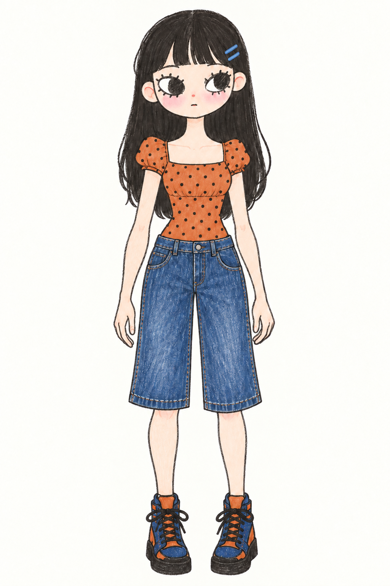
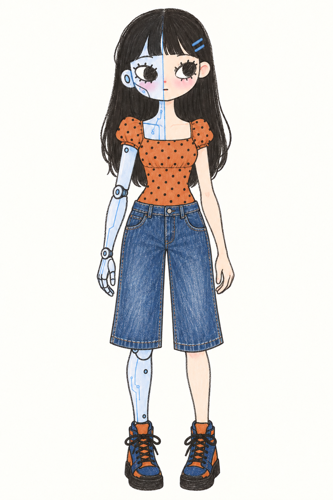

uncanny
LOOK TWICE.Checking page…ON DEVICE


A second look.
Play a video to capture six frames.
Visual analysis · six sampled frames
View six captured frames
Saves frames and this video’s URL to a local JSON file. Nothing is uploaded.
Advanced: motion research
Captures about four seconds and checks one usable section. Experimental: animation and edits can mislead it.
Experimental · v0.4.2 beta
Evidence about sampled frames—not proof of authenticity.